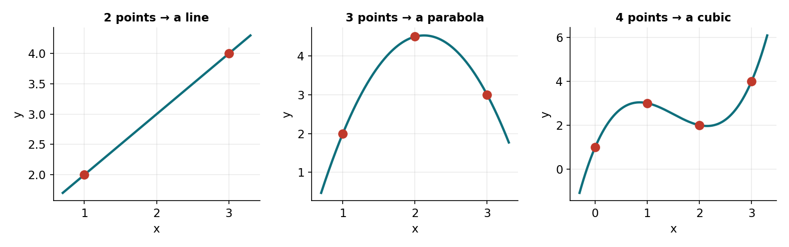
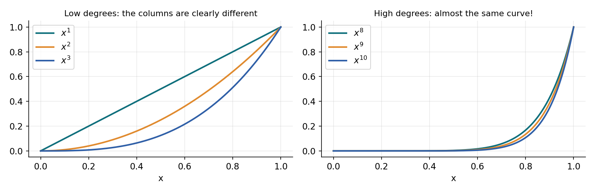
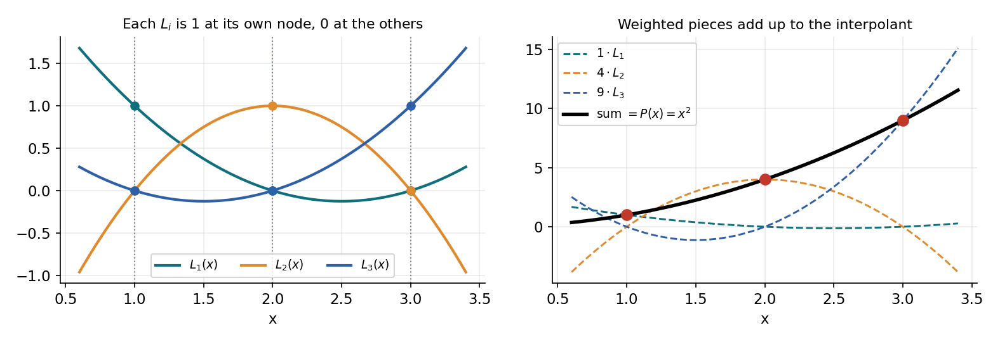
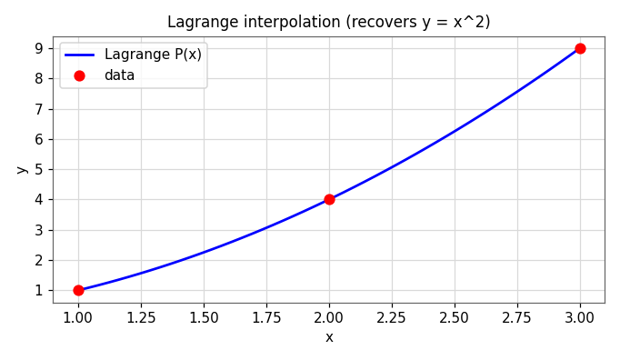
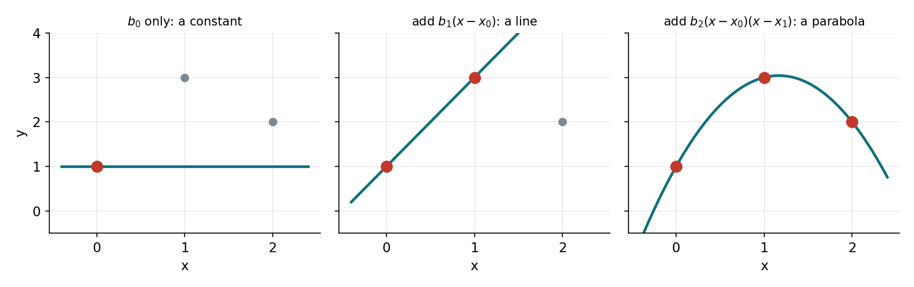
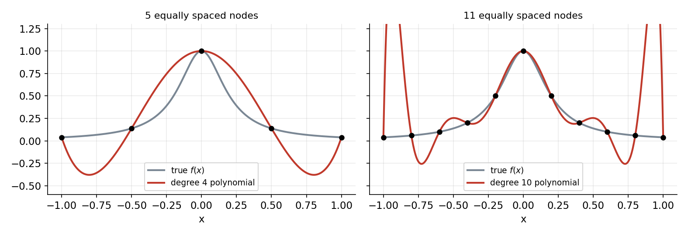
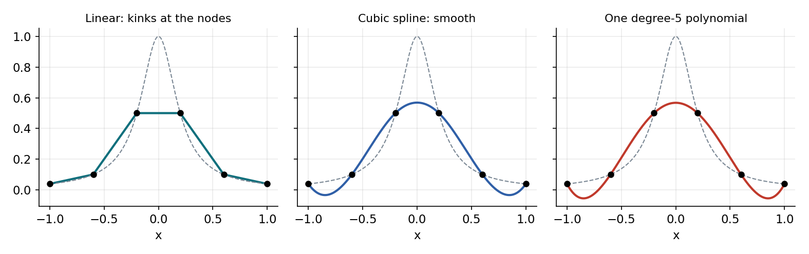
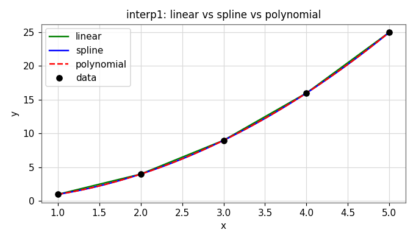

Interpolation & Polynomial Approximation
Apply interpolation methods and polynomial approximation. Here the curve must pass through every data point. We build interpolating polynomials (Lagrange, Newton), see why high degree is dangerous, and switch to piecewise splines.
Interpolation vs. extrapolation
Interpolation estimates values between known data points; extrapolation estimates outside the data range. Unlike least-squares fitting (Module 3), interpolation assumes the data is exact and requires the curve to pass through every point.
4.1 Polynomial interpolation
Through any \(n\) data points with distinct \(x\)-values, there is exactly one polynomial of degree at most \(n-1\) that passes through all of them. Two points define a unique line; three points a unique parabola; and so on.

The unknowns here are the \(n\) coefficients \(a_0,\dots,a_{n-1}\). Each data point gives one equation, \(P(x_i)=y_i\), so we get \(n\) equations for \(n\) unknowns, a linear system we can solve.
You could find the coefficients by solving a linear system (a Vandermonde system), but that matrix is often ill-conditioned. The Lagrange and Newton forms construct the same unique polynomial more reliably.

4.2 Lagrange interpolating polynomials
Big idea: instead of solving for coefficients, build the answer from simple "switch" pieces. Each piece is 1 at one data point and 0 at all the others, so multiplying it by that point's \(y\)-value "switches on" exactly one data point.
The Lagrange form writes the interpolant (the interpolating polynomial \(P(x)\) that passes through every data point) as a weighted sum of the data values:
Each basis polynomial \(L_i(x)\) is cleverly built to equal \(1\) at its own node \(x_i\) and \(0\) at every other node. So at \(x=x_k\) only the \(k\)-th term survives and \(P(x_k)=y_k\) — the curve hits every point by construction.

Worked example
Interpolate the three points \((1,1),(2,4),(3,9)\):
As expected, the unique degree-2 polynomial through those points is \(y=x^2\).

Source: Interpolation lecture (Lagrange code lab).
4.3 Newton's divided-difference form
Newton's form builds the same polynomial incrementally, which makes it cheap to add a new data point without recomputing everything:
Big idea: start with a constant that matches the first point, then add a line to also match the second, then a parabola to also match the third, and so on. Each new term is multiplied by factors that are zero at the earlier nodes, so it does not disturb the points already matched.

The coefficients \(b_k\) are divided differences, computed from a triangular table. A first divided difference is just a slope; a second divided difference is the change in slope, divided by the width. Higher ones are slopes of slopes.
Worked example
Problem. Find the interpolating polynomial through \((0,1),\ (1,3),\ (2,2)\) using Newton's form, then estimate \(P(0.5)\).
Step 1: build the divided-difference table. Write the \(y\)-values in the first column. Each next column is computed from the column to its left: (difference of neighbours) divided by (the \(x\)-distance they span).
| \(x_i\) | \(f[x_i]\) | 1st difference | 2nd difference |
|---|---|---|---|
| 0 | 1 | ||
| 2 = (3−1)/(1−0) | |||
| 1 | 3 | −1.5 = (−1−2)/(2−0) | |
| −1 = (2−3)/(2−1) | |||
| 2 | 2 |
Step 2: read off the coefficients. They are the bold numbers along the top edge: \(b_0=1,\ b_1=2,\ b_2=-1.5\). So
Step 3: check it. At \(x=0\) only \(b_0\) survives: \(P(0)=1\) ✓. At \(x=1\): \(1+2(1)-1.5(1)(0)=3\) ✓. At \(x=2\): \(1+4-1.5(2)(1)=2\) ✓. The curve hits all three points.
Step 4: estimate \(P(0.5)\).
Step 5: add a new point cheaply. Suppose a fourth point \((3,5)\) arrives. Keep everything above and add one term \(b_3(x-0)(x-1)(x-2)\). Currently \(P(3)=1+6-1.5(3)(2)=-2\), but we need 5, so the gap is \(7\). The new factor equals \(3\cdot2\cdot1=6\) at \(x=3\), hence \(b_3=7/6\approx1.167\). Nothing already computed had to change, which is exactly why Newton's form is convenient when data arrive one at a time.
Lagrange and Newton give identical polynomials — they are just two ways to write the unique interpolant. Newton is preferred when points arrive one at a time; Lagrange is conceptually cleaner.
4.4 The danger of high-degree interpolation
It is tempting to fit many points with one high-degree polynomial. But high-degree interpolants oscillate wildly between equally spaced points — especially near the ends of the interval. This is Runge's phenomenon, classically shown with

As you add equally spaced nodes, the interpolating polynomial fits the nodes exactly yet swings further and further from \(f\) between them. The demo below lets you watch this happen.
🎛 Demo: interpolation methods & Runge's phenomenon
Click to add points, or load the Runge preset and increase the node count. Compare the single high-degree Lagrange polynomial against a piecewise-linear interpolant and a cubic spline.
4.5 Piecewise & spline interpolation
Instead of one global polynomial, a spline joins many low-degree polynomials, one per interval between data points.
- Linear spline: connect adjacent points with straight segments. Simple, but kinked (the slope jumps at each node).
- Cubic spline: a separate cubic on each interval, chosen so the pieces meet smoothly — matching value, first derivative, and second derivative at every interior node. The result is smooth and avoids Runge oscillation.

4.6 MATLAB's built-in interpolation
MATLAB ships fast, robust interpolation functions — you rarely write your own in practice:

interp1(...,'spline') for smooth interpolation of a data table, and 'linear' when you just need quick in-between values. Reserve a single high-degree polynomial for a small number of points.Source: Interpolation & Functional Approximation lectures.
Practice examples
One example per topic (4.1–4.6). Work it on paper, then reveal.
Reveal answer
In general, \(n+1\) distinct points determine exactly one polynomial of degree ≤ \(n\). 2 points → a line; 3 points → a parabola; …
Reveal answer
Reveal answer
\(f[x_0,x_1,x_2]=\dfrac{-1-2}{2-0}=-1.5\)
\(P(x)=1+2(x-0)-1.5\,(x-0)(x-1)\)
\(P(0.5)=1+1-1.5(0.5)(-0.5)=\mathbf{2.375}\) the Newton coefficients are the top of each divided-difference column
Reveal answer
Reveal answer
At every interior knot it matches value, first derivative, and second derivative (\(C^{2}\) continuity), so the curve looks smooth. A "natural" spline sets the second derivative to zero at the two ends. many smooth low-degree pieces beat one high-degree curve
xq? How do you ask for linear vs spline?Reveal answer
yq = interp1(x, y, xq, 'linear'); % straight-line pieces
yq = interp1(x, y, xq, 'spline'); % smooth cubic spline
yq = interp1(x, y, xq, 'pchip'); % shape-preserving cubic'spline' is the \(C^{2}\) cubic spline from 4.5.
interp1 for 1-D; interp2 for surfaces